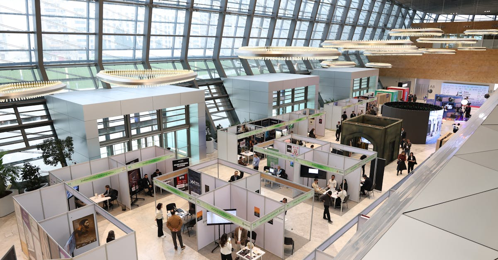

Un Souffle d'Optimisme sur les Marchés Mondiaux
Vendredi dernier a marqué un tournant inattendu pour les marchés financiers mondiaux. Alors que les tensions au Moyen-Orient atteignaient des sommets, deux nouvelles majeures ont provoqué une onde de choc positive : l'annonce d'un cessez-le-feu entre Israël et le Hezbollah au Liban, et des informations persistantes selon lesquelles l'Iran aurait décidé de rouvrir le stratégique détroit d'Ormuz au trafic commercial. Ces développements, loin d'être anodins, ont agi comme un puissant catalyseur, propulsant les actifs considérés comme risqués vers de nouveaux sommets. Le S&P 500, indice phare de la bourse américaine, n'a pas seulement clôturé en hausse ; il a atteint un niveau record historique, couronnant un mois de novembre exceptionnel. En effet, la progression observée a été la plus significative depuis 2020, signalant un regain de confiance marqué des investisseurs. Cette réaction vive des marchés souligne à quel point les événements géopolitiques, lorsqu'ils évoluent favorablement, peuvent rapidement dissiper l'incertitude et stimuler l'appétit pour le risque. L'impact de ces annonces dépasse les simples chiffres ; elles renvoient une image de stabilité retrouvée, un signal bienvenu dans un contexte économique mondial encore fragile. Les analystes financiers, habitués à décrypter les signaux faibles, ont été nombreux à saluer cette résilience des marchés, souvent qualifiée de 'rebond technique' mais qui pourrait bien marquer le début d'une tendance plus durable. Il est fascinant d'observer comment une résolution, même partielle, de conflits régionaux peut avoir des répercussions aussi immédiates et profondes sur l'économie globale. Cette dynamique rappelle l'importance cruciale d'une veille constante et d'une stratégie d'investissement adaptable, des principes au cœur de l'épargne intelligente que nous promouvons.
👉 À lire : Accord Iran : L'IA décrypte l'impact sur vos placements

Le Détroit d'Ormuz : Axe Vital de l'Économie Mondiale
Le détroit d'Ormuz, cette étroite voie navigable reliant le golfe Persique à l'océan Indien, est bien plus qu'un simple passage maritime. Il représente une artère vitale pour l'économie mondiale, particulièrement pour l'approvisionnement énergétique. On estime qu'environ 30% du pétrole transporté par voie maritime transite par ce détroit chaque jour. Sa fermeture, ou même une perturbation significative de son trafic, aurait des conséquences dévastatrices sur les prix de l'énergie, l'inflation et, par extension, sur la croissance économique globale. La simple menace de fermeture ou de blocage avait suffi, par le passé, à faire flamber les cours du pétrole et à semer la panique sur les marchés financiers. L'annonce d'une possible réouverture, relayée par les agences de presse internationales, a donc été accueillie avec un immense soulagement par les acteurs économiques. Pour les marchés, cela signifie une diminution immédiate du risque géopolitique, un facteur clé qui pesait sur la confiance des investisseurs. Ce détroit est également un passage essentiel pour le gaz naturel liquéfié (GNL) produit dans la région, notamment par le Qatar. Une perturbation aurait donc des impacts non seulement sur les marchés pétroliers, mais aussi sur ceux du gaz, affectant directement les coûts de production et de consommation dans de nombreux pays. La décision présumée de l'Iran de le rouvrir est interprétée comme un geste d'apaisement, potentiellement lié à des négociations diplomatiques en cours ou à une volonté de stabiliser les revenus pétroliers. Cette situation met en lumière la volatilité inhérente aux marchés et l'influence prépondérante des événements géopolitiques sur la performance de nos investissements. Une gestion prudente et diversifiée, souvent facilitée par des outils d'automatisation intelligents, devient alors primordiale pour naviguer ces eaux parfois tumultueuses.
👉 À lire : IA et Emploi : Les Économistes sous-estiment-ils la menace ?
L'Impact du Cessez-le-feu sur la Confiance des Investisseurs
La trêve convenue entre Israël et le Hezbollah au Liban constitue le deuxième pilier majeur de ce regain d'optimisme sur les marchés. Pendant des mois, les craintes d'une escalade régionale, impliquant potentiellement d'autres acteurs majeurs du Moyen-Orient, ont pesé lourdement sur le sentiment des investisseurs. L'idée d'un conflit plus large embrasant la région était un scénario cauchemardesque pour l'économie mondiale, synonyme d'instabilité énergétique, de perturbations des chaînes d'approvisionnement et d'une envolée de l'inflation. Le cessez-le-feu, même s'il reste fragile et soumis à des vérifications, offre une bouffée d'oxygène bienvenue. Il permet de réduire significativement le risque d'une contagion du conflit. Pour les marchés, cela se traduit par une diminution de l'aversion au risque. Les investisseurs sont plus enclins à placer leur argent dans des actifs jugés plus volatils mais potentiellement plus rémunérateurs, tels que les actions. Les indices boursiers, comme le S&P 500 mentionné précédemment, en ont directement bénéficié. Cette détente géopolitique a également un impact psychologique non négligeable. Elle renforce la perception que les tensions peuvent être résolues par la diplomatie, même dans les zones les plus sensibles du globe. Cette amélioration du sentiment général est un moteur puissant pour les marchés, encourageant les achats et soutenant la dynamique haussière. Il est important de noter que la perception joue un rôle aussi crucial que les faits bruts dans la psychologie des marchés. Un accord de paix, même précaire, peut avoir un effet plus immédiat et positif qu'une amélioration économique concrète mais lente. Ce phénomène souligne l'importance d'une approche d'investissement qui ne se fie pas uniquement aux fondamentaux économiques, mais qui intègre également l'analyse des risques géopolitiques et du sentiment du marché. L'automatisation des stratégies d'investissement, par exemple, peut aider à réagir rapidement à ces changements de perception.

Le S&P 500 : Un Symbole de Résilience et de Croissance
L'atteinte d'un nouveau record historique pour le S&P 500 n'est pas seulement une statistique ; elle est le reflet d'une tendance de fond et d'une résilience remarquable des entreprises américaines face aux défis économiques et géopolitiques. Cet indice, qui regroupe les 500 plus grandes capitalisations boursières des États-Unis, est souvent considéré comme un baromètre de la santé de l'économie américaine et, par extension, de l'économie mondiale. Sa progression soutenue, culminant avec ce nouveau sommet, témoigne de plusieurs facteurs :
- Une croissance des bénéfices des entreprises, souvent supérieure aux attentes, portée par l'innovation et l'adaptation aux nouvelles réalités économiques.
- Un environnement de taux d'intérêt qui, bien que fluctuant, a permis une certaine liquidité sur les marchés, soutenant la valorisation des actions.
- La performance exceptionnelle de certains secteurs clés, notamment la technologie, qui continue de bénéficier de la transformation numérique mondiale.
- Enfin, et c'est le point qui nous intéresse ici, une capacité des marchés à ignorer ou à rapidement surmonter les chocs externes, qu'ils soient économiques ou géopolitiques, dès lors que des signaux positifs apparaissent.
Ce record intervient dans un contexte où l'inflation reste une préoccupation et où les politiques monétaires des banques centrales sont scrutées à la loupe. La capacité du S&P 500 à franchir de nouveaux caps malgré ces incertitudes est un signe de force. Pour l'investisseur individuel, cela peut être interprété comme une validation de la stratégie d'investissement à long terme dans des indices diversifiés. Cependant, il est crucial de ne pas se laisser aveugler par l'euphorie. Les records sont souvent suivis de périodes de consolidation ou de correction. La clé réside dans une approche équilibrée, combinant l'exposition aux marchés porteurs avec une gestion rigoureuse des risques. C'est là que l'intelligence artificielle peut jouer un rôle déterminant, en analysant en temps réel une multitude de données pour ajuster les portefeuilles et optimiser les stratégies, même lorsque les nouvelles semblent contradictoires.
L'IA comme Levier pour Naviguer l'Incertitude Géopolitique
Dans un monde où l'incertitude géopolitique semble être devenue la nouvelle norme, comment l'investisseur individuel peut-il protéger et faire fructifier son épargne ? La réponse réside de plus en plus dans l'adoption d'outils et de stratégies capables d'analyser des volumes massifs de données complexes et d'agir avec une réactivité inégalée. C'est précisément le domaine où l'intelligence artificielle (IA) excelle. L'actualité récente, avec ses soubresauts au Moyen-Orient et ses répercussions sur les marchés, illustre parfaitement cette nécessité. Alors que les analystes humains peinent à traiter simultanément les flux d'informations provenant des capitales politiques, des marchés financiers, des chaînes d'approvisionnement et des indicateurs économiques, un agent IA peut le faire en quelques millisecondes. Il peut identifier des corrélations subtiles, évaluer le risque potentiel d'un événement géopolitique sur différentes classes d'actifs, et proposer des ajustements de portefeuille en temps réel. Par exemple, face à une montée des tensions dans une région clé comme le détroit d'Ormuz, un système basé sur l'IA pourrait :
- Surveiller en continu les prix du pétrole et du gaz.
- Analyser les flux de trafic maritime et les déclarations officielles des gouvernements impliqués.
- Évaluer l'impact potentiel sur les entreprises cotées dans les secteurs de l'énergie, du transport et de la défense.
- Ajuster automatiquement l'allocation d'actifs pour réduire l'exposition aux risques identifiés et potentiellement saisir de nouvelles opportunités dans des secteurs moins affectés ou bénéficiant de la situation.
Cette capacité à traiter l'information et à agir de manière prédictive et réactive est fondamentale. Elle permet de passer d'une gestion d'investissement réactive, souvent guidée par l'émotion face aux crises, à une gestion proactive et optimisée. L'IA ne se contente pas de réagir ; elle anticipe, calcule et optimise, 24h/24 et 7j/7. C'est la promesse d'une épargne plus intelligente, moins sujette aux aléas émotionnels et mieux armée face aux complexités du monde financier moderne.
L'Automatisation : Un Rempart Contre la Volatilité Émotionnelle
Les marchés financiers sont, par nature, sujets à des cycles d'euphorie et de panique. Les événements géopolitiques, comme ceux récemment observés au Moyen-Orient, agissent souvent comme des détonateurs, exacerbant ces mouvements émotionnels. Lorsque les nouvelles sont mauvaises, la peur peut pousser les investisseurs à vendre leurs actifs dans la précipitation, souvent au plus bas. Inversement, lorsque les nouvelles sont bonnes, l'avidité peut les inciter à acheter à des prix élevés, manquant ainsi le potentiel de gains futurs. Cette volatilité émotionnelle est l'un des principaux ennemis de la performance d'un portefeuille d'investissement. L'automatisation des stratégies d'investissement, pilotée par des algorithmes sophistiqués et l'IA, offre une solution élégante à ce problème. Un agent IA, par définition, est dépourvu d'émotions. Il exécute des ordres basés sur des règles prédéfinies et des analyses objectives des données du marché. Que le marché monte en flèche ou s'effondre, l'agent IA continue de fonctionner selon sa programmation, achetant, vendant ou rééquilibrant le portefeuille selon des critères rationnels. Prenons l'exemple du rebond des marchés suite aux nouvelles positives du Moyen-Orient. Un investisseur humain pourrait hésiter, craignant un retournement de situation. Un agent IA, lui, pourrait avoir été programmé pour identifier ce type de rebond comme une opportunité d'augmenter son exposition aux actifs risqués, en se basant sur des indicateurs techniques et des modèles prédictifs. Inversement, si les tensions réapparaissaient, l'IA pourrait vendre automatiquement sans céder à la panique. L'automatisation permet ainsi de :
- Appliquer une discipline de fer, indépendamment des fluctuations du marché.
- Exécuter des transactions à des moments optimaux, souvent plus rapidement qu'un humain.
- Réduire les erreurs coûteuses dues à la fatigue ou à l'émotion.
En somme, l'automatisation transforme l'investissement, le rendant plus systématique, plus rationnel et, potentiellement, plus performant. C'est un outil puissant pour ceux qui cherchent à optimiser leur épargne en toute sérénité.
Diversification et Gestion des Risques à l'Ère de l'IA
L'une des leçons fondamentales de l'investissement est l'importance de la diversification. Ne pas mettre tous ses œufs dans le même panier est un adage qui prend encore plus de sens lorsque l'on considère la complexité et l'interconnexion des marchés financiers mondiaux, amplifiées par les risques géopolitiques. La récente flambée des marchés, stimulée par des nouvelles positives au Moyen-Orient, a montré comment des événements localisés peuvent avoir des répercussions globales. Dans ce contexte, la diversification ne consiste plus seulement à répartir son capital entre différentes actions ou obligations. Elle doit intégrer une dimension plus large, prenant en compte les risques souverains, les risques liés aux matières premières, les risques de change, et bien sûr, les risques géopolitiques. C'est ici que l'IA apporte une valeur ajoutée considérable. Les algorithmes d'IA peuvent analyser des milliers d'actifs à travers le monde et évaluer leurs corrélations en temps réel. Ils peuvent identifier des opportunités de diversification que l'œil humain pourrait manquer, notamment dans des marchés émergents ou des classes d'actifs alternatives. De plus, l'IA est un outil formidable pour la gestion dynamique des risques. Plutôt que de maintenir une allocation d'actifs statique, un système intelligent peut ajuster la diversification du portefeuille en fonction des niveaux de risque perçus. Par exemple, si l'IA détecte une augmentation significative du risque géopolitique dans une région particulière, elle peut automatiquement réduire l'exposition aux actifs sensibles à cette région et augmenter celle des actifs considérés comme plus sûrs ou bénéficiant de cette situation. Cette approche dynamique permet de mieux naviguer la volatilité et de protéger le capital sans pour autant renoncer aux opportunités de croissance. C'est une optimisation continue, où la diversification et la gestion des risques ne sont pas des actions ponctuelles, mais un processus intégré et intelligent, piloté par la technologie.
Les Opportunités Cachées dans la Volatilité
Si la volatilité est souvent perçue négativement par les investisseurs, elle représente en réalité une source constante d'opportunités pour ceux qui savent l'analyser et l'exploiter. Les fluctuations rapides des prix, qu'elles soient dues à des événements géopolitiques comme ceux récents, à des annonces économiques ou à des changements sectoriels, créent des écarts entre la valeur intrinsèque perçue d'un actif et son prix de marché. C'est dans ces écarts que se nichent les opportunités d'achat à bon compte ou de vente au plus haut. L'intelligence artificielle est particulièrement bien armée pour identifier et saisir ces opportunités fugaces. Contrairement aux traders humains, les systèmes d'IA peuvent :
- Analyser des millions de points de données en temps réel pour identifier des anomalies de prix.
- Exécuter des transactions en quelques millisecondes, profitant de mouvements de marché très courts.
- Identifier des tendances émergentes avant qu'elles ne deviennent évidentes pour le grand public.
- Modéliser des scénarios complexes pour anticiper les réactions du marché à différents types d'événements.
Par exemple, lors d'une annonce surprise concernant le détroit d'Ormuz, un algorithme pourrait détecter une surréaction du marché sur certaines actions pétrolières. Il pourrait alors exécuter une stratégie de trading visant à profiter de ce mouvement temporaire, avant que le marché ne se corrige. De même, une détente soudaine des tensions pourrait déclencher des achats massifs sur des secteurs jusque-là délaissés, comme le tourisme ou les biens de consommation discrétionnaire. Un agent IA pourrait identifier cette tendance naissante et investir préventivement. Bien sûr, le trading basé sur la volatilité comporte des risques. Cependant, lorsqu'il est piloté par une IA performante et intégré dans une stratégie d'investissement globale et diversifiée, il peut significativement améliorer le rendement potentiel d'un portefeuille. Il s'agit d'une approche sophistiquée, qui tire parti de la technologie pour transformer l'incertitude en avantage compétitif, rendant l'épargne plus dynamique et potentiellement plus lucrative.
Perspectives Futures : Stabilité Durable ou Volatilité Continue ?
Alors que les marchés financiers célèbrent le rebond induit par des nouvelles géopolitiques encourageantes, la question fondamentale demeure : cette accalmie est-elle le prélude à une période de stabilité durable, ou simplement une pause avant de nouvelles turbulences ? Les experts de Bloomberg, tels que Mike McGlone, soulignent souvent la résilience intrinsèque des marchés, mais aussi leur sensibilité aux chocs imprévus. La situation au Moyen-Orient, bien qu'en voie d'apaisement, reste intrinsèquement volatile. D'autres points de friction existent à l'échelle mondiale, qu'il s'agisse des tensions commerciales entre grandes puissances, des défis liés au changement climatique ou des incertitudes économiques persistantes (inflation, politiques monétaires). Il est donc peu probable que les marchés entrent dans une phase de calme plat. Au contraire, une volatilité modérée mais continue semble être le scénario le plus plausible pour les mois et années à venir. Dans ce contexte, l'approche d'investissement idéale est celle qui ne cherche pas à prédire l'imprévisible, mais qui est conçue pour performer quelles que soient les conditions de marché. C'est là que l'investissement automatisé par IA prend tout son sens. Un agent IA, programmé pour s'adapter, peut ajuster les stratégies en temps réel, que ce soit pour renforcer les positions lors de baisses temporaires, réduire l'exposition au risque en cas de dégradation du contexte géopolitique, ou saisir les opportunités créées par les fluctuations. L'objectif n'est pas de battre le marché à chaque instant, mais d'optimiser la trajectoire de croissance du capital sur le long terme, en minimisant les risques et en maximisant les rendements ajustés au risque. L'épargne intelligente, aujourd'hui, c'est cette capacité à intégrer les dernières avancées technologiques pour construire un avenir financier plus serein et plus prospère, même face à un monde incertain.
Conclusion : L'Avenir de l'Épargne est Intelligent et Automatisé
L'épisode récent de tension au Moyen-Orient et la réaction subséquente des marchés financiers mondiaux nous rappellent une vérité fondamentale : l'incertitude est une composante inhérente au paysage économique et géopolitique. Cependant, là où certains voient du risque, d'autres, armés des bons outils, peuvent discerner des opportunités. La capacité des marchés à rebondir, stimulée par des nouvelles positives, témoigne de leur résilience, mais aussi de la rapidité avec laquelle les flux d'informations peuvent influencer les décisions d'investissement. Dans ce contexte, l'approche traditionnelle de l'épargne et de l'investissement atteint ses limites. L'avenir appartient à ceux qui sauront adopter des stratégies plus agiles, plus rationnelles et plus efficaces. C'est précisément la promesse de l'épargne intelligente et de l'investissement automatisé par l'intelligence artificielle. Un agent IA, opérant 24h/24, peut analyser en permanence le marché, évaluer les risques géopolitiques, identifier les opportunités et ajuster votre portefeuille de manière optimale, le tout sans être influencé par les émotions humaines. Il permet une diversification plus poussée, une gestion des risques plus dynamique et une exploitation des volatilités qui seraient inaccessibles à la plupart des investisseurs individuels. Adopter une solution comme notre Agent IA, c'est choisir de confier la gestion de votre épargne à une technologie de pointe, conçue pour naviguer les complexités du monde financier moderne avec précision et efficacité. C'est faire le choix d'une épargne optimisée, sécurisée et tournée vers l'avenir, vous permettant de profiter pleinement du potentiel de croissance des marchés, tout en maîtrisant les risques inhérents.